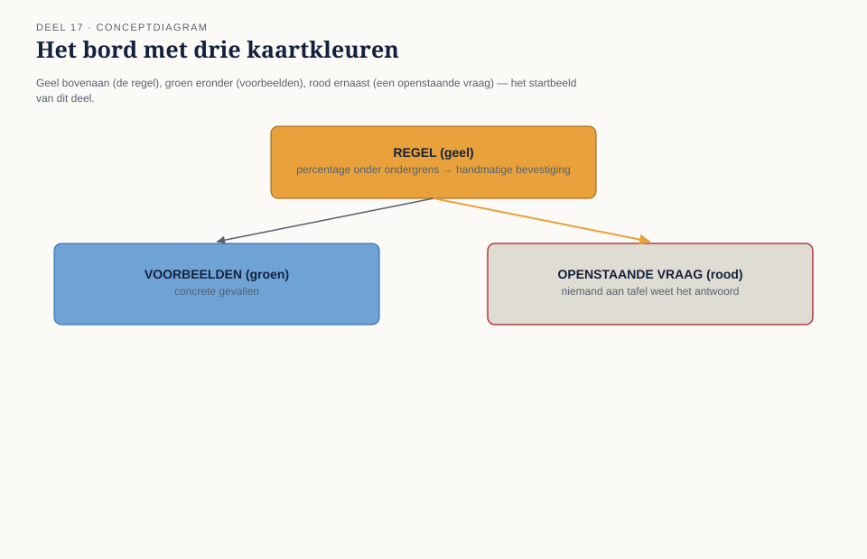
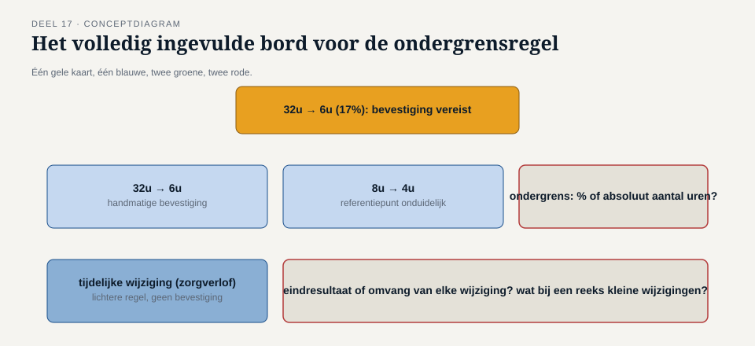
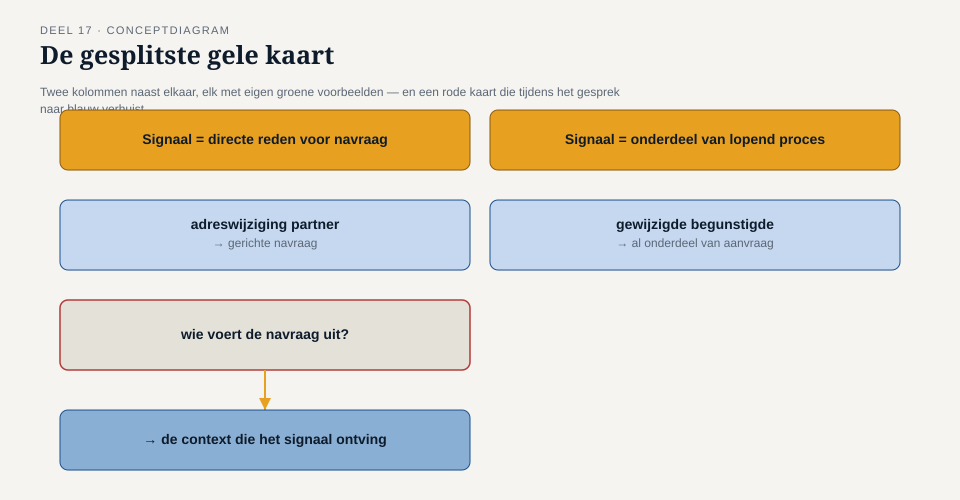

Deel 17 — Example mapping en specification by example
Slidedeck · Ductus-cursus Domain-Driven Design · niveau 2 · deel 17 van 30 · 32 slides
Slide 1 — Titel
Domain-Driven Design — deel 17 Example mapping en specification by example Niveau 2: professional · Programma Mutatieplatform
Slide 2 — Waar we vandaan komen
Deel 16: twee scherp geformuleerde, nog niet getoetste regels. De ondergrensregel. De detectievraag.
Slide 3 — Vera
“Ik dacht altijd: ergens onder de twintig procent. Maar ik heb het nooit ergens zwart-op-wit gezien.”
Slide 4 — Otto’s vraag
“Kunnen we niet gewoon een percentage kiezen en verder gaan?”
Slide 5 — Foppe’s antwoord
“Als we nu een percentage kiezen, kiezen we het uit het niets.”
Slide 6 — Example mapping
Matt Wynne. Eén regel. Concrete voorbeelden. Elke onbeantwoorde vraag krijgt een eigen, zichtbare plek.
Slide 7 — Wat dit deel oplevert
- De vier kaarttypen
- De ondergrensregel getoetst
- Wanneer een regel eigenlijk twee regels is
- Specification by example
- De voorbeeldkaart
Slide 8 —

Het bord: geel bovenaan, groen eronder, rood ernaast
Slide 9 — De gele kaart
De regel zelf. Eén zin. Eén gele kaart per gesprek.
Slide 10 — De blauwe kaart
Een aanvullende regel of randvoorwaarde. Ontstaat vaak tijdens het gesprek zelf.
Slide 11 — De groene kaart
Een concreet voorbeeld. Concrete waarden. Direct toetsbaar.
Slide 12 — De rode kaart
Een vraag die niemand kan beantwoorden. Geen storing — opbrengst.
Slide 13 —

De vier kaarttypen, met pijlen die laten zien hoe ze elkaar voeden
DEEL A — DE ONDERGRENSREGEL
Slide 14 — De gele kaart
“Bij een percentage onder de ondergrens moet een medewerker handmatig bevestigen.”
Slide 15 — Vera’s voorbeeld
32 uur → 6 uur (17%). Groene kaart.
Slide 16 — Karstens vraag
8 uur → 4 uur — hoe te wegen zonder referentiepunt? Rode kaart: percentage, of absoluut aantal uren?
Slide 17 — Otto’s geval
40 uur → 36 uur, in twee stappen naar 15. Te hypothetisch voor groen. Wél een rode kaart.
Slide 18 — Willemijns geval
Een tijdelijke wijziging, zorgverlof, vaste einddatum. Blauwe kaart: een lichtere regel.
Slide 19 — Vera, aan het eind
“We hebben de regel niet opgelost. Maar we weten nu precies wélke twee vragen we moeten beantwoorden.”
Slide 20 —

Het volledig ingevulde bord — 1 geel, 1 blauw, 2 groen, 2 rood
DEEL B — DE DETECTIEREGEL
Slide 21 — Merels gele kaart
“Als er een signaal binnenkomt dat op een scheiding kan wijzen, wordt het gemarkeerd.”
Slide 22 — Twee voorbeelden, twee vervolgstappen
Adreswijziging → gerichte navraag. Begunstigdewijziging → al onderdeel van lopend proces.
Slide 23 — Foppe herkent het patroon
“Als de voorbeelden telkens een ander soort vervolgstap nodig hebben, dekt de gele kaart eigenlijk twee regels.”
Slide 24 — Splitsen
Twee gele kaarten. Elk met eigen groene voorbeelden.
Slide 25 — Van rood naar blauw
Wie voert de navraag uit? Ter plekke beantwoord — rode kaart wordt blauw.
Slide 26 —

De gesplitste gele kaart, met de rode-naar-blauwe kaart ertussen
Slide 27 — Specification by example
Het bredere principe. Een specificatie is pas compleet als ze bestaat uit concrete voorbeelden.
Slide 28 — Uitgangssituatie · gebeurtenis · resultaat
Een generieke, ondubbelzinnige vorm om een voorbeeld vast te leggen.
Slide 29 — Vera’s observatie
“Om deze regel te toetsen, moet het systeem weten wat het oorspronkelijke percentage was — en dat leeft binnen dezelfde aggregaatgrens. Maar de controle zelf lijkt ergens anders te horen.”
Slide 30 — De werkvorm van dit deel
De voorbeeldkaart
Vier stappen. Eén vraag die het verschil maakt.
Slide 31 — Het veld dat het verschil maakt
Verandert er iets als je dit voorbeeld weghaalt —
of illustreert het, met andere getallen,
hetzelfde als een voorbeeld dat er al ligt?
Slide 32 — Volgende keer
Deel 18 — Aggregates herzien: consistentiegrenzen bij meerdere teams. Drie signalen, in twee delen tijd, wijzen naar dezelfde vraag.